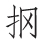

纤云四卷天无河 [1] ，清风吹空月舒波 [2] 。沙平水息声影绝 [3] ，一杯相属君当歌 [4] 。君歌声酸辞正苦，不能听终泪如雨：“洞庭连天九疑高 [5] ，蛟龙出没猩鼯号 [6] 。十生九死到官所 [7] ，幽居默默如藏逃 [8] 。下床畏蛇食畏药 [9] ，海气湿蛰熏腥臊 [10] 。昨者州前捶大鼓 [11] ，嗣皇继圣登夔皋 [12] 。赦书一日行千里，罪从大辟皆除死 [13] 。迁者追回流者还 [14] ，涤瑕荡垢清朝班 [15] 。州家申名使家抑 [16] ，坎轲只得移荆蛮 [17] 。判司卑官不堪说 [18] ，未免捶楚尘埃间 [19] 。同时流辈多上道 [20] ，天路幽险难追攀 [21] 。”君歌且休听我歌，我歌今与君殊科 [22] ：“一年明月今宵多 [23] ，人生由命非由他，有酒不饮奈明何 [24] ！”
【题解】
张功曹，即张署，行十一，河间（今属河北）人。德宗贞元十九年（803），关中旱饥，人死相枕藉，当时同为监察御史的韩愈和张署，直言上谏，请德宗减免关中租赋（见《御史台上论天旱人饥状》），得罪权臣，同遭贬谪，韩愈贬连州阳山（今属广东）令，张署贬郴州临武（今属湖南）令。永贞元年（805）正月，顺宗即位，大赦天下，愈与署俱遇赦待命郴州，因湖南观察使杨凭的阻挠，未得调任。八月，宪宗即位，又大赦，二人方同调江陵府，愈为法曹参军，署为功曹参军，故称张功曹。此诗即为由郴州将赴江陵时所作。
【评析】
韩愈和张署初为同僚，后同遭贬谪，命运相同，交谊颇深，他自称“最为知君”（《唐故河南令张君（署）墓志铭》）。今遇赦相聚，仍被阻抑，量移蛮荒，不得回朝，适逢中秋之夜，对酒当歌，自是满腹幽愤。但他不明说，而是借张署之悲歌，倾诉衷曲，哀怨满纸，凄恻动人。这种借他人之酒杯浇自己之块垒的写法，较自己现身说法，更能收到一唱三叹的艺术效果。“君歌”是全诗的主体部分，而“我歌”只有三句，故作旷达，似淡实浓，言近旨远，戛然而止，耐人寻味。在用韵上，开头四句和最后五句都用平声歌韵，中间二十句换四韵，平仄相间，而都是两句上声韵转八句平声韵，这样整齐错综，首尾呼应，既雄浑恣肆，又婉转流畅，极富声情。
【注释】
[1] 纤云：纤细的云。河：指银河。因皓月当空而银河不显，故曰“天无河”。
[2] 波：指月光。
[3] 水：指郴江。
[4] 属（zhǔ）：倾注。《仪礼•士昏礼》：“酌玄酒，三属于尊。”相属：此有相劝意。
[5] 洞庭：湖名。九疑：山名，都在湖南境。由长安贬临武，途经洞庭湖，九疑山在临武西。
[6] 猩：猩猩。鼯（wú）：鼯鼠，又名大飞鼠。
[7] 官所：指贬所临武。
[8] 幽居：潜居不出。如藏逃：像藏匿的逃犯似的。
[9] 食畏药：饮食时担心中毒。
[10] 湿蛰（zhé）：潮湿。
[11] 州前：指郴州衙前。捶大鼓：指皇帝登位大赦。《新唐书•百官志》：“赦日击

鼓千声，集百官父老囚徒。”[12] 嗣皇：继位的皇帝，指唐顺宗。登：进用。夔（kuí）皋（ɡāo）：尧舜时的两位贤臣夔和皋陶，此指新皇帝起用贤臣。
[13] 大辟：死刑。《礼记•文王世子》：“其死罪，则曰某之罪在大辟。”除死：免死。
[14] 迁者：遭迁谪的人。流者：被流放的人。
[15] 涤瑕荡垢：指清刷罪名，恢复名誉。清朝班：一作“朝清班”。
[16] 州家：指州刺史。申名：申报名册。使家：指湖南观察使杨凭。抑：压制。
[17] 坎轲：即坎坷，指命运不济。荆蛮：张署量移江陵功曹，江陵古属荆蛮之地。
[18] 判司：唐代州郡佐吏的统称。韩愈为法曹，张署为功曹，皆为江陵府佐吏，正七品下小官，故曰“判司卑官”。白居易《自吟拙什因有所怀》诗：“谪向江陵府，三年作判司。”所怀指元稹，时贬江陵府士曹参军。
[19] 捶：通“棰”，杖。楚：荆木。棰楚：指杖刑。尘埃间：指伏地受刑。杜牧《冬至日寄小侄阿宜诗》：“参军与县尉，尘土惊劻勷。一语不中治，笞棰身满疮。”是唐参军官卑，有过，不免受笞杖之刑。
[20] 同时流辈：同时受贬谪的人。上道：走上回长安的路。
[21] 天路：喻指回朝之路。幽险：险恶不平。
[22] 殊科：不一样，不同类。
[23] 多：最圆，最美。
[24] 奈明何：怎么对得起这美好的明月呵！